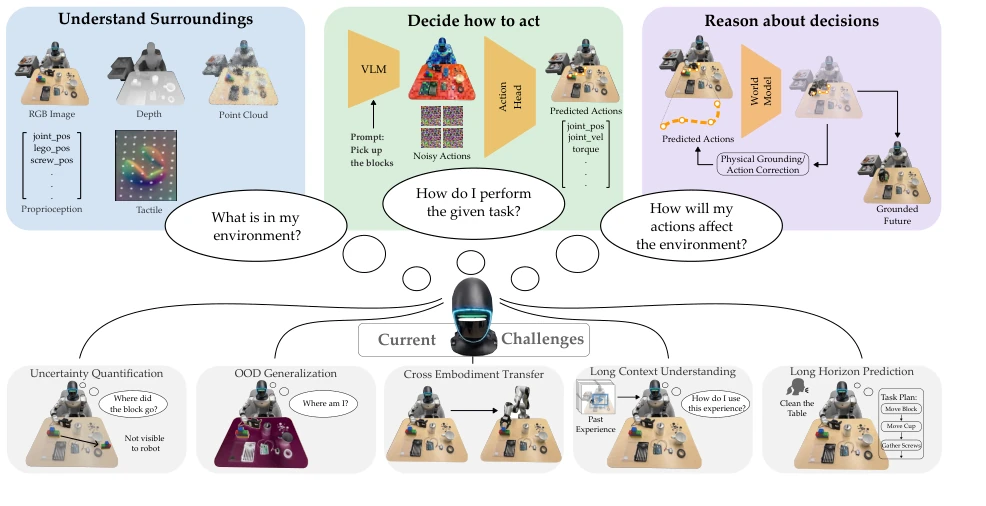
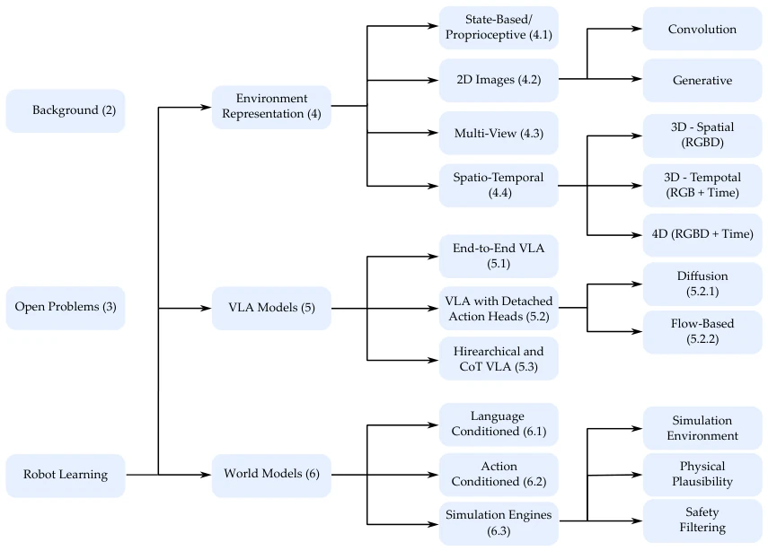
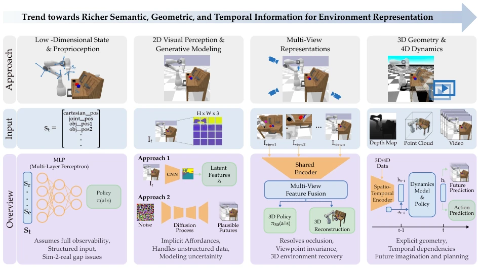
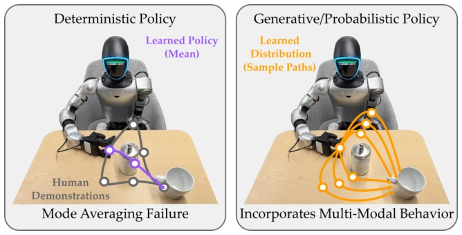
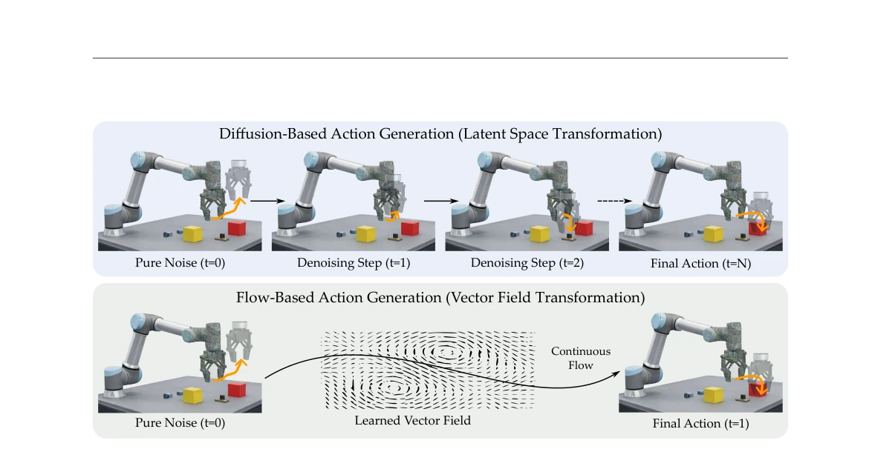
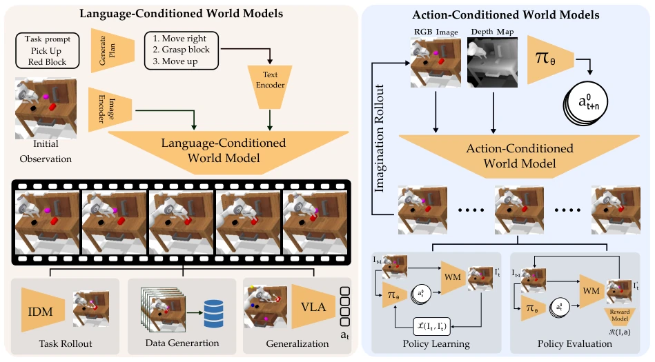
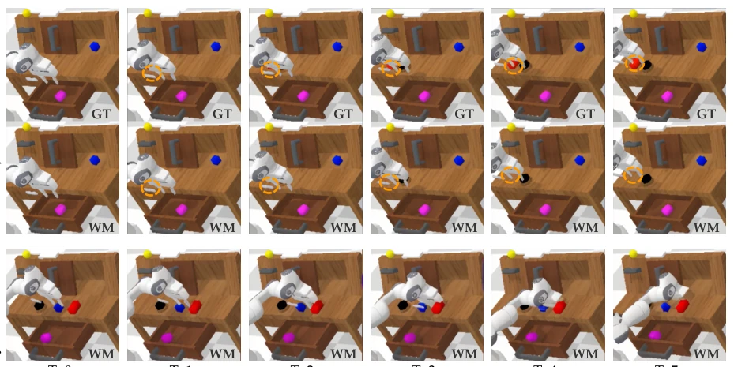

This review attempts to establish a "Grand Unified Theory" for the chaotic robot learning community. The authors bring Representation, VLA, and World Models together on the same table, arguing they should be in a relationship rather than fly solo. Although the reasoning is correct, it is like telling scientists "you should unite," but how specifically to unite? The article provides a Taxonomy, classifying existing methods by axes, while also criticizing that everyone is currently "optimal in single modules, but the whole is a mess." For tough challenges like OOD and cross-embodiment generalization, the article admits the current situation is awkward, but offers no silver bullet, just painting a vision saying future work will pursue "physics-grounded probabilistic learning." Overall, this is a good "map," but do not expect it to directly lead you out of the maze, after all, "unification" is easy to say, engineering is full of pitfalls, and it lacks specific end-to-end validation, more about organizing theoretical frameworks, suitable for finding direction but not for directly copying code.
研究动机Motivation
机器人从实验室走向现实，发现“单科状元”变“学渣”。现有工作通常孤立发展 Representation、VLA 和 World Models (Mascaro & Chli, 2025; Salimpour et al., 2025; Ding et al., 2025b)。这导致系统碎片化，泛化差，长视界规划难。文章指出，感知学到的特征可能不利于控制，VLA 可能忽略预测反馈，World Models 可能不接地物理约束。需要统一视角来解决不确定性量化、OOD 泛化、跨本体迁移等挑战。特别是当测试分布与训练分布不一致时，孤立优化的组件无法协同工作，导致机器人无法在开放世界可靠运行。此外，数据集的模态差异也阻碍了统一训练，使得各模块难以共享信息，限制了系统整体的鲁棒性和适应性。
Robots moving from the lab to reality find "top students in single subjects" turn into "underperformers." Existing work typically develops Representation, VLA, and World Models in isolation (Mascaro & Chli, 2025; Salimpour et al., 2025; Ding et al., 2025b). This leads to system fragmentation, poor generalization, and difficult long-horizon planning. The article points out that features learned by perception may be unfavorable for control, VLA may ignore predictive feedback, and World Models may not ground physical constraints. A unified perspective is needed to address challenges such as uncertainty quantification, OOD generalization, and cross-embodiment transfer. Especially when test distribution differs from training distribution, isolated optimized components cannot collaborate, causing robots to fail to operate reliably in open worlds. Additionally, dataset modality differences hinder unified training, making it difficult for modules to share information, limiting the system's overall robustness and adaptability.

Figure 1: Overview of ideal robust real-world robot learning combining perception, action and reasoning. Robots should first build representations of their environments from multimodal observations, then map these observations and task instructions to meaningful actions, and finally reason about the consequences of their actions. Despite recent progress in each individual domain, there are several challenges to robust real-world robot learning, including uncertainty quantification, out-of-distribution generalization, cross-embodiment transfer, long-context understanding, and long-horizon prediction. This survey summarizes the work in these domains, and provides direction of future research for robust real-world robot learning.
The article does not propose a new model, but constructs a unified framework. The core consists of three axes: Representation (environment representation), VLA (action generation), World Models (predictive reasoning). Four integration types are proposed (Table 2): Representation-Policy, Representation-World, Policy-World, Triadic. Existing methods are classified accordingly, e.g., VLA is divided into End-to-End, Modular, Hierarchical. World Models are divided into Language-conditioned and Action-conditioned. It emphasizes coupling these components through shared states, joint objectives, or predictive rollouts, rather than simple serial connection. It also compares the roles of different datasets (Table 3) in supporting these axes, pointing out Open-X Embodiment and BridgeData V2 are major data gravity sources. Additionally, the article discusses in detail the key role of uncertainty quantification and physical grounding in integration, attempting to provide design principles for future architectures, and analyzes specific failure cases of existing methods regarding occlusion and physical constraints.

Figure 2: Organization of the survey and taxonomy of robot learning approaches. We organize the robot learning field into three primary components: environment representation, vision-language-action (VLA) models for robot learning, and world models. Environment representations range from state-based and image observations to multi-view and spatiotemporal representations. VLA model based learning meth- ods include end-to-end VLA models, modular architectures with detached action heads, and hierarchical approaches. World models are categorized based on conditioning mechanisms and their use in simulation, physical reasoning, and safety. Open challenges associated with these components are illustrated in Figure 1.
As a survey, there are no traditional experiments. The main work is systematically analyzing existing datasets and benchmarks (Table 3). Compared the support levels of ImageNet, Open-X Embodiment, BridgeData V2, etc., on Rep, VLA, WM. Analyzed limitations of existing methods, e.g., Fig 8 shows World Model failures in occlusion and physical constraints. Positioned the contribution of this paper by comparing different Surveys (Table 1). Pointed out the current lack of unified evaluation standards, requiring future work to solve. The focus is on revealing shortcomings of existing methods through literature review, rather than proposing new algorithms. The article also uses charts to show performance differences of different models in long-horizon prediction and cross-embodiment transfer, providing reference basis for subsequent research, especially the role of benchmarks like CALVIN and LIBERO in VLA evaluation.
其他图片Other Figures

Figure 3: Evolution of environment representations in robot learning. Early approaches rely on structured state and proprioceptive inputs assuming full environment observability, while more recent approaches rely on visual perception, multi-view observations, and 3D and 4D representations to capture the scene geometry and dynamics. This progression enables improved reasoning about occlusions, temporal dependencies, and future outcomes, supporting more robust interaction and planning in complex environments.

Figure 4: Comparison of deterministic and generative policies in vision-based robot learning. When trained on multimodal demonstrations that show different ways to perform the same task, deterministic policies (left) collapse distinct behaviors into a single averaged action, often leading to suboptimal execution (e.g., averaging left and right obstacle-avoidance behaviors). In contrast, VLA models with generative policies (right) capture distributions over actions, enabling diverse and context-appropriate behaviors.

Figure 5: Comparison between diffusion-based and flow-based action generation. (Top) Diffusion models generate actions through an iterative denoising process, progressively refining a noisy initialization over multiple discrete steps. (Bottom) Flow-based approaches, in contrast, learn a continuous vector field that directly transforms noise into valid actions via a single smooth trajectory.

Figure 6: Comparison of language-conditioned and action-conditioned world models in robot learning. (Left) Language-conditioned world models generate future observations based on initial visual observations and language-based task instructions, enabling high-level reasoning for task planning, large-scale data generation, and generalization. (Right) Action-conditioned world models on the other hand, predict future observations of the environment conditioned on the sequence of robot actions, capturing the dynamics of the environment for policy learning and evaluation. Together, these paradigms reflect complementary approaches to modeling environment evolution for decision-making in robot learning.

Figure 8: Qualitative evaluation illustrating some limitations of world model predictions. The top two rows compare ground-truth (GT) observations with world model (WM) predictions in scenarios involving occluded objects, where the model fails to maintain object permanence and does not account for hidden entities during interaction. The bottom row shows world model rollouts under novel action conditions, where predictions violate basic physical constraints (e.g., the robot arm passing through the table).